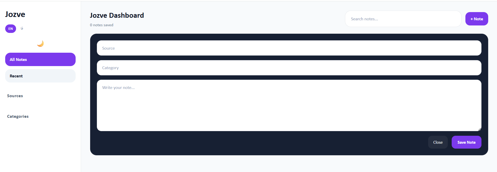
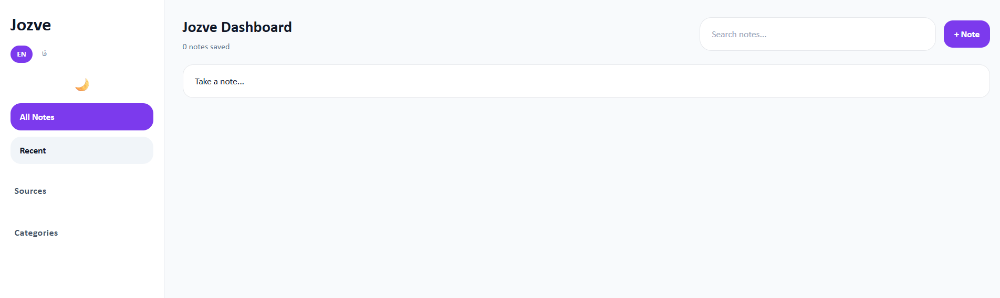
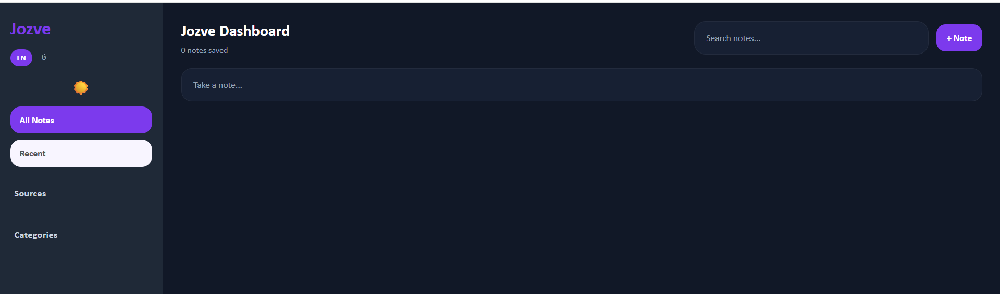

Why I built Jozve
I constantly collect ideas, references, research notes, and fleeting thoughts while browsing. Most tools felt too heavy or too disconnected from the actual workflow. So I built Jozve.
Personal Knowledge Workspace
Jozve helps you capture, organize, and revisit knowledge without leaving your browser.



I constantly collect ideas, references, research notes, and fleeting thoughts while browsing. Most tools felt too heavy or too disconnected from the actual workflow. So I built Jozve.